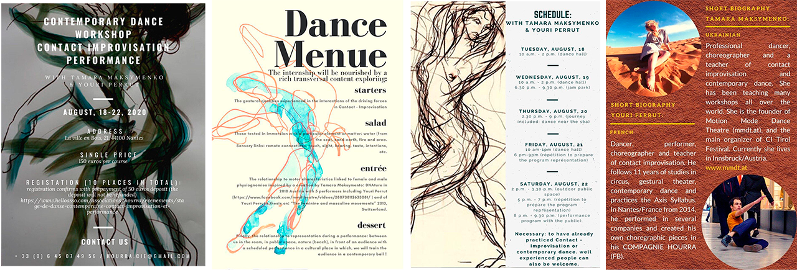

We are happy to announce the second Contact Improvisation Festival in Tyrol and invite you to share this time together with us.
We are happy to announce the second Contact Improvisation Festival in Tyrol and invite you to share this time together with us. Come and enjoy one of the most beautiful places in the world, in the heart of the Alpine mountains - the Tyrol land.
7 days from 10th to 16th of August you will be surrounded by the untouched beauty of the local wilderness, lakes, and meadows, as well as friends and highly experienced teachers. You will be involved into relaxing and tiny Oberndorf in Tirol town's life. Give a chance to get inspired by bewitching nature around you, fulfill every movement following from your heart and create one of the most stunning pictures of your life.
Contact improvisation and solo-improvisation technique, performative, somatic practices, physical theatre, and anatomy course are waiting for you. Jams will be led by live vocalists and musicians from all over the world. You will have the opportunity to live in private or shared rooms, try delicious local cuisine, dance every day, and dilute yourself in a pure outdoor life enjoying the spirit of Alps!
Festival Directory
After Party Workshop with Tamara Maksymenko & Youri Perrut
